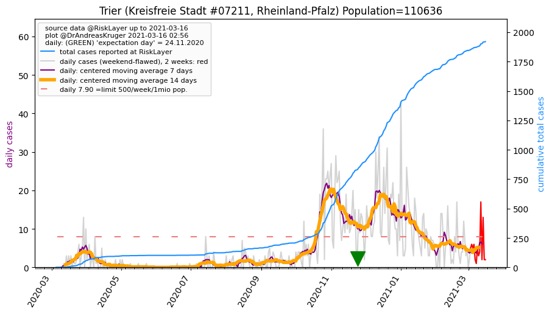
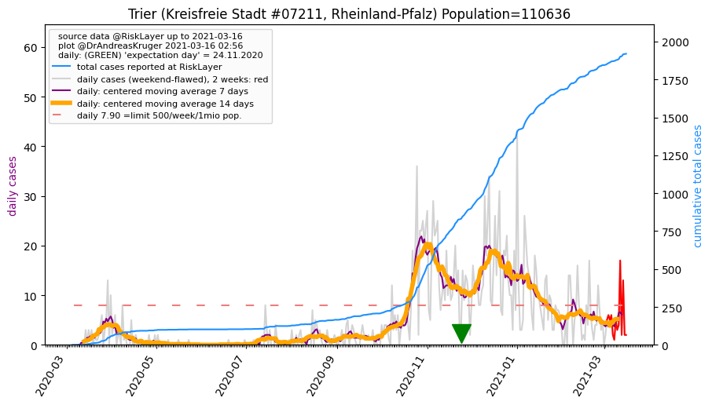

")
")

")
")
| Eifelkreis Bitburg-Prüm_LK (0.0 km) |
Vulkaneifel_LK (31.1 km) |
| Trier_KS (37.6 km)  |
Bernkastel-Wittlich_LK (42.8 km) |
| Trier-Saarburg_LK (45.5 km) |
All plots are regenerated with new data every night. Beware this temporary hotspot is an experimental page - it might get removed, so please do not link to it. Instead link to project http://tiny.cc/cov19de.